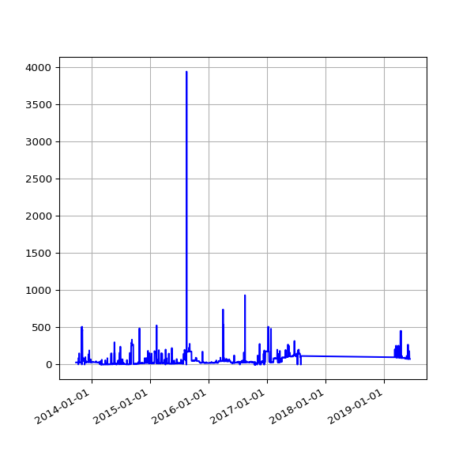

Download Errors
How many files failed to download?
Files that failed to download, when accessed via the IATI Registry. Note: This may because no URL is listed on the registry, or when requesting the URL the publisher's server returns an error message (e.g. because there is no file at that location). Since the dashboard's download occurs routinely, some files that failed to download may now be available.
74 Files that fail to download
Count of files that fail to download, over time.
List of files that fail to download.
Click the  icons to sort the table by a column. Selecting further columns whilst holding the shift key will enable secondary (tertiary etc) sorting by the desired column/s.
icons to sort the table by a column. Selecting further columns whilst holding the shift key will enable secondary (tertiary etc) sorting by the desired column/s.